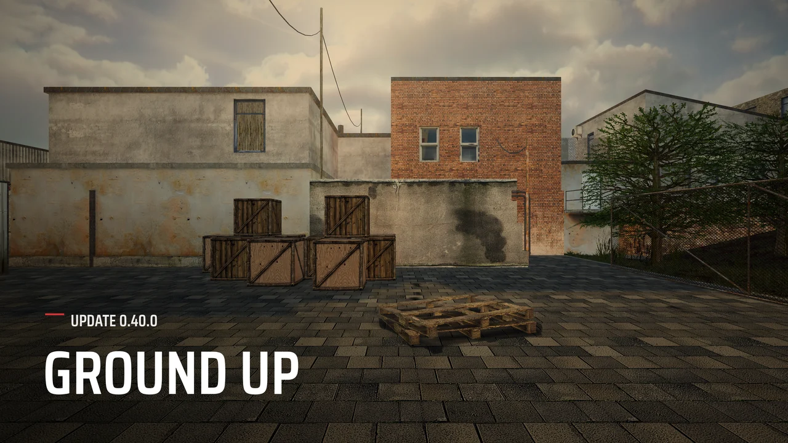
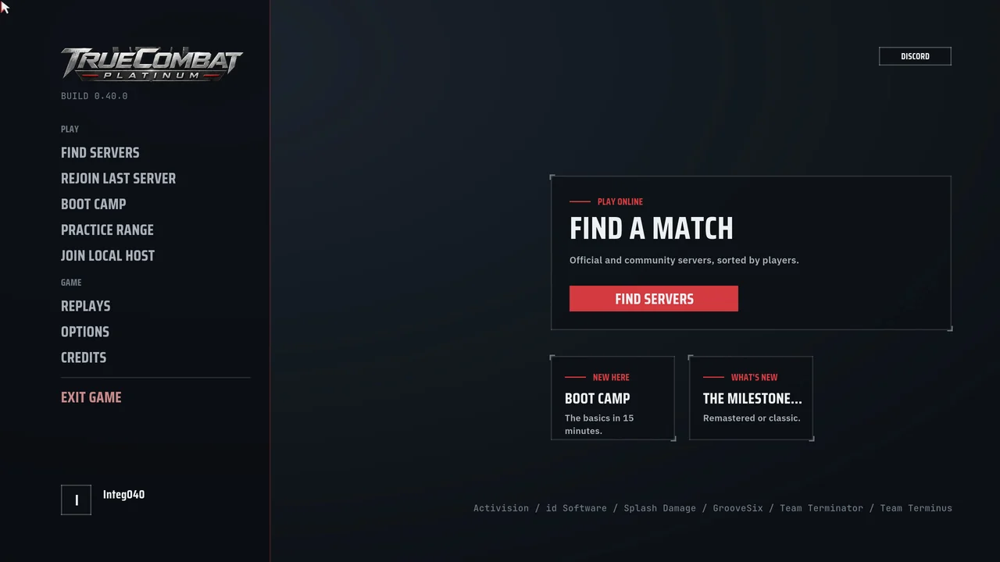
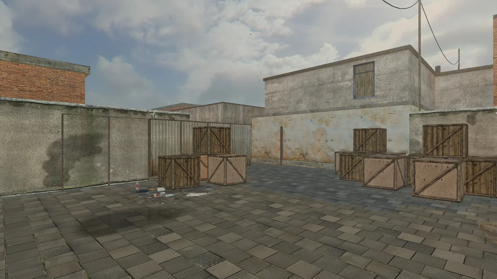
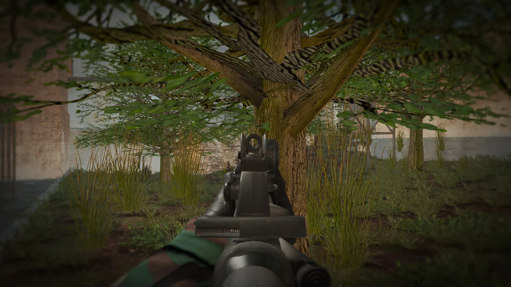

Ground up
A rebuilt interface, a new generation of light and effects, the choice between Remastered and Classic, Season 1, location pings, CQB in the core game, a brand-new map called Lockgate and a long list of changes shaped by your feedback. The full story of update 0.40.0, our biggest yet.

When we started planning 0.40.0, the brief was short: make it a milestone. Not a patch with a long list attached, but an update that changes how TrueCombat: Platinum looks, sounds and feels from the moment you open the launcher to the moment the last round ends.
That meant touching almost everything. Every menu has been redesigned. The lighting has a new generation of effects behind it. The soldiers, the maps and the sounds have been remastered, and for the first time you decide whether you play with that new layer or with the game exactly as it looked twenty years ago. Season 1 is on its way, so every match will have something to play towards. Location pings give every team a voice, even without a microphone. And close quarters combat, which spent two updates behind an experimental switch, graduates into the core game.
Late in development we also read through a round of community feedback about aiming, recoil and sniping, and decided those fixes could not wait for another release. They are in 0.40.0 too.
0.40.0 is in final testing now and arrives soon. This is the long version, with everything we changed and why, so you can read up before you play.
An interface built for this game
The menus Platinum inherited were built for a different era: small fixed screens, dense text and layouts that assumed a 4:3 monitor. They worked, but they never felt like part of a modern tactical shooter. For 0.40.0 we rebuilt all of them.
The main menu, Options, Deployment, the server browser, the loading screen and the match screens all share one design language now: clean panels, clear type and a consistent way of telling you where you are and what a setting does. Options is grouped the way you think about it rather than the way the engine stores it. Graphics presets set a sensible starting point in one click, and every individual setting is still there underneath if you want it.

The server browser gained filters, so finding a full Ranked server or an empty one to practise on no longer means scrolling a long list. Notification toasts keep you informed without taking over the screen. Behind every panel sits a soft background blur, so the world you just left stays visible.
A HUD that stays out of the way
The in-game HUD is new as well, and it now defaults to 70 percent of its old size. On a modern widescreen monitor the old HUD took more room than it needed. The new one scales correctly for your resolution and keeps the centre of the screen clear for what matters, which is the fight. If you prefer it larger, the slider in Options goes all the way back.

Knowing what happened
Two screens tell you more about each round and each match than the game ever has. The death recap shows who got you, with which weapon and from where, so a death is something you learn from rather than something you guess at. At the end of a match, the post-match screen sums up your game.
Map callouts now appear on screen as you move through a map, and they are the same names your team sees in pings and on the minimap. When someone says "Pump hall" or "North street", everyone means the same place.
A new generation of light
The engine work in 0.40.0 is the largest single step in Platinum's renderer since DirectX 12 arrived. The goal was not to make the maps look like a different game. It was to make light behave the way your eye expects it to, so that a corridor, a courtyard or a muzzle flash reads correctly in a split second.
Light that moves
Muzzle flashes and explosions now light up the world around them. Fire a rifle in a dark stairwell and the walls flicker with it. A grenade going off around a corner throws a brief glow across the floor before the sound reaches you. These dynamic lights are fast enough to run on every preset that has them, and they give away exactly as much as they should: a firefight in a dark room is visible from the doorway.

Air and sky
On DirectX 12, every map now has an atmosphere. Sunlit haze builds up over long sightlines, and the sky matches each map's time of day instead of sitting behind it like a painted backdrop. Bounce light lets sunlit surfaces spill soft colour into nearby rooms and corners, so an interior beside a bright courtyard is no longer uniformly dark.
Lamps now cast shadows. Fog is lit by the lights inside it. Fittings throw pools of light onto the floor beneath them, which, together with the darker lighting we introduced in 0.39, gives interiors real contrast between lit and unlit space.
Every impact
Bullet holes and scorch marks now have depth instead of being flat stickers on a wall. A new particle system drives impacts, smoke, sparks and debris, so a burst into concrete kicks up dust and chips that behave like dust and chips. Smoke grenades are denser, and spent brass stays on the floor after a firefight.

The kill cam, which got its cinematic camera in 0.39.6, now adds depth of field and a colour grade during the replay on DirectX 12.
Faster, on more machines
New effects mean nothing if they make the game harder to run. A shader cache means maps load faster after the first time, and a smarter texture budget keeps cards with less video memory running smoothly instead of stuttering when a map's textures do not fit. A change of map no longer leaves the previous map's shadows and lighting behind, which some of you saw as dark rectangles floating on walls.
Remastered or Classic: your choice
TrueCombat:Elite has a look that many of you remember exactly. We wanted to bring the game forward without taking that away from anyone, so 0.40.0 adds a single switch in Options: Remastered or Classic.
Remastered gives you the new layer we have been building for months. The maps get remastered materials and props, faithful to the originals: the same layouts, the same silhouettes and the same spots you know, with surfaces that hold up on a modern display. The Special Forces and Terrorist soldiers have been remastered with new vests and gear, your first-person hands are rounder and better formed, and the items you carry have been remastered too. For players on high-end machines, the launcher offers an optional HD texture pack of about 1 GB when you play on Ultra.
Classic gives you the original look of TrueCombat, as it was.


Classic RemasteredThe switch only changes what you see. Hitboxes, sightlines, movement and sound are identical in both modes, so there is no advantage in either choice. Each team now also fields one soldier model, so every player reads the same in a firefight: an enemy is an enemy at a glance, whatever you picked.
In Deployment you can make your soldier your own with five camos per team, and Terrorists can choose a cap, a headscarf or a balaclava.

Season 1
0.40.0 lays the foundation for Season 1, and the launcher already shows your season card on its home screen. When the season starts, every match counts towards something: ranks from Rookie to Platinum, earned by playing, and three new contracts every week with clear goals to work towards, in Ranked and Unranked alike.
For the times you want to play alone, two solo challenges get their own leaderboards: the Range Run, a timed course on the firing range, and a bot challenge. Everyone who plays during the launch season receives the Frontline badge. We will announce the start of the season on Discord and here on the devlog.
Location pings
Not everyone plays with a microphone, and in a fast round there is rarely time to type. The new ping wheel gives every player a voice: Go, Enemy, Danger, Watch, Help, Bomb, Acknowledge and Clear.
Pings use the map's own callout names and show up as dots on the minimap, so "Enemy, Pump hall" is a complete sentence your team understands instantly. Bots respond to your pings as well: mark a place to go and your bot teammates will move with you.
CQB joins the core game
Close quarters combat started as an experiment in 0.38.0, with its own weapons, optics, sounds and rules on a separate server switch. The response to it has been clear enough that it now joins the core game.
CQB weapons, optics and sounds are part of every server, with no experimental setting needed. The Harbour map joins the map pool, and CQB Rules becomes a regular Unranked mode. The G3 gains a semi-automatic mode, and the M110 has been fixed.
CQB weapons also enter Ranked, with two exceptions. The Shorty shotguns and the akimbo M1911 stay in Unranked for now, because at close range they are strong enough that we want more data before they decide ranked matches.
Your feedback
Shortly before this update was finished, a round of feedback from the community arrived about how aiming, recoil and sniping feel. Rather than hold the answers for the next release, we built them into 0.40.0.
Aiming down sights
When you aimed down sights, the weapon sat too far from your eye. The iron sight was small, and on some rifles it was hard to pick out against a busy background. Every weapon now sits closer when you aim, tuned per weapon, so the sight is larger and easier to read while it stays centred on the point of aim. The AK-47 moves in a little less than the others, so its dust cover does not crowd the sight.
We also cleaned up what happens on screen when bullets land. When you are hit, your own blood effect now stays away from the centre of the screen instead of washing over your sights. Blood on a target is smaller and clears faster, and the hit marker is slimmer, so you can see whether your target is still standing.


0.39 0.40.0An optional red dot
Ten rifles and submachine guns can now carry an M68 red dot: the M4, M16, SIG 552, SG 552, SCAR, REC7, MP5, MP5SD, UMP45 and MP9. You switch it on per weapon in Deployment, and other players see it on your gun in third person.
The red dot changes what you see, not how the weapon behaves. Field of view, spread and recoil stay exactly the same as with iron sights, so it is a matter of taste rather than an advantage. On the M4, M16 and REC7 the dot sits on a small riser, so the iron sight's front post still lines up just below it.

Recoil you can control
Recoil climbed and never fully came back. After a burst, your view stayed a little higher than where you started, and over a few bursts that drift added up, worst of all on the AK family. We found the cause: the game only returned part of each shot's kick, and the random part of the climb was never returned at all.
Now the whole kick comes back. Between bursts the view settles back to where you were aiming in well under half a second, the random extra climb is halved and the AK-47 kicks a little less. In our tests, ten rounds from an AK-47 used to leave the view about ten degrees higher than the first shot. Now it comes back to the start. Recoil still has a cost while you fire. It simply no longer follows you to the next target. This applies with Tactical balance, which runs by default on every server.
Sniper scopes
Sniper scopes zoomed in and out on a slow curve that took the better part of a second to settle. They now zoom in faster and zoom out much faster, so you can come off the scope and react to someone close without waiting for the view. Iron sights keep their current timing.
We also fixed a long-standing issue that some of you reported with the R93: scoped shots fired while leaning could miss a target that was dead centre in the crosshair. When you lean, the camera rolls and your eye sits slightly lower, but the shot was still fired from the upright position, a few centimetres too high. Shots, grenade throws and the check for a blocked muzzle now all start from where your eye really is, on both sides.
Hit confirmation
A hit should feel like a hit. The Remastered hit sounds are new: a heavy, fleshy thwack on body hits, a sharp bone crack on headshots and a heavier confirmation on a kill. We built them from real recordings rather than synthesised tones, because the first versions sounded mechanical, and a hit you can hear without looking is worth a lot in a firefight. Classic keeps the original set.
Hit sounds and hit markers stay your choice on Unranked servers. On Ranked they are always off, because in a competitive match we want you to judge a fight with your own eyes. Options tells you so while you play Ranked, and the game never changes your own setting: when you return to Unranked, everything is as you left it.
Muzzle flashes in daylight
First-person muzzle flashes were easy to miss in bright daylight, and on some weapons they started a little behind the end of the barrel. They are now clearly visible on a sunny map and start exactly at the muzzle, including on pistols and akimbo pistols.
Spawning on the right side
When a team's spawn points were crowded, the game could place a player in the enemy half of the map. That can no longer happen. If your own side is full, you spawn as close to it as the map allows.
A new map: Lockgate
0.40.0 brings a map built from the ground up for Platinum. Lockgate is a drained canal lock in an old industrial quarter: a pump house on the west side, the lock chamber and its gate catwalks in the middle and a rail swing bridge to the east. The Terrorists start in a brick brewery quarter to the north, the Special Forces in the concrete customs buildings to the south.
We designed Lockgate to be fair before anything else. The map is mirrored across the canal, so both teams have identical routes, identical cover and identical timings: it takes both sides the same time to reach each of the three lanes, and attackers reach either bomb site in about fifteen seconds. Each lane plays differently. The pump house is close quarters with a gallery above, the lock is a mid-range fight across and down into the chamber, and the swing bridge offers the map's longest sightline for those who prefer to hold an angle. No spawn can see into another.
Lockgate plays in every mode: Bomb, Team Elimination, Team Deathmatch, Flag Capture and Capture Point. Before it reached you, it was played by bots in all five, over and over, to make sure nothing gets stuck and every bomb site can be planted and defended.


Sound
Every map now has its own ambience bed, so a quiet moment on Railhouse sounds different from a quiet moment on Snow. Gunfire changes with distance, from a sharp crack close by to a distant rumble across the map, which makes it easier to judge how far away a firefight is. Footsteps have more variety on every surface.
Under the hood, the audio library has been updated for clean, stable sound at high sample rates.
Better 3D audio on headphones
If you play with the 3D headphone mode, sounds should now come from much more convincing directions. The new profile is based on measurements of a professional binaural dummy head, the kind used to make recordings that sound as if you were in the room, which gives clearer front and back and a better sense of height. Footsteps above you sound above you.
The profile comes from the SADIE project at the University of York, whose data we are glad to credit in the game. This product includes data developed at The Audio Lab, University of York, UK (Cal Armstrong, Lewis Thresh, Gavin Kearney) as part of the SADIE Project.
Bots
Bots play with distinct roles now and choose weapons that suit the map, so a team of bots no longer looks like five copies of the same soldier. They vault obstacles and climb out of awkward spots instead of getting stuck, and we fixed problem areas on Chlite, Villa and Shozen. On servers that use them, bots fill empty slots and leave smoothly as real players join, so a server never feels empty and never feels crowded.
New players
The first hour in a game decides whether a new player stays. Boot Camp is a ten-minute training ground that takes you through the basics station by station: crouching, going prone and leaning through an obstacle lane, vaulting and climbing, the firing range, grenades, the armoury, planting the bomb and, to finish, a live-fire house against bots. On first launch the game runs a short benchmark and picks the right graphics preset for your PC, so a new player starts with a game that looks good and runs well instead of a settings menu.
Launcher 3.2
The launcher handles the new optional downloads: the Remastered content and the HD texture pack, with resume and per-file repair, so an interrupted download picks up where it stopped and a damaged file is replaced on its own. It notices when you change graphics card and offers to tune your settings for the new one. The home screen shows your Season 1 card, and a new Credits and licences page names everyone whose work the game builds on.
Credits
Platinum is built on the shoulders of others, and we want that to be visible. The credits in the game and the launcher now name the ET: Legacy team and id Software, whose open-source work the Platinum engine is built on, alongside the SADIE project for the headphone profile and every community map author whose work ships with the game.
The game logo is the original TrueCombat: Platinum logo, now in high resolution in the launcher and menus.
Servers and security
Official servers now use a 20-second map vote at the end of each match, so the next map is chosen quickly and by the players on the server.
We've tightened and expanded our security measures.
What is next
0.40.0 is a milestone, not a finish line. With the new interface, the new renderer features and the remaster switch in place, the next updates can build on a much stronger base. As always, the patch notes on Discord list every change, and we read every report.
Thank you for playing, for every bug report and for every piece of feedback that shaped this update. See you on the front line.
Was this worth the read?
Anonymous. No account, no cookies.
Questions about this post? Ask the team on Discord.